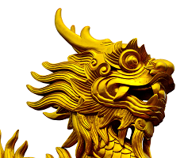

ラーメンの話
雷文raimon
ラーメンどんぶりの内側や縁に描かれている、あの四角い渦巻きはなんだろう。 迷路のようにも見えるし、角張った雲がたなびいているようにも見えなくはない。 起源は、中国・殷の時代（紀元前1500～1000年）の青銅器にもみられる「雷文（らいもん）」だ。雷文は稲妻をあらわしたもので、中国では、雷光や雷鳴は天の意思をあらわすと考え、おそれ崇めていたという。 ラーメンどんぶりの模様は、人々が崇めた雷を図案化したものなのだ。さらに、ラーメンなどの器に描かれた他の図柄も、それぞれ意味を持つ。
定番
鳳凰Houo
「鳳凰」の図柄は、古代中国でもっとも高貴で幸運を招く空想上の鳥を描いたもの。「鳳」は雄鳥で皇帝の紋章、「凰」は雌鳥で皇后の紋章として用いられた。
龍 Dragon
「龍」の図柄として描かれているのは、天帝の使者として古くから崇められた空想上の動物。その昔は、皇帝以外は使ってはいけない紋章で、爪を四つにすることで、皇帝の紋章と区別された。
双喜門Soukimon
「双喜文（そうきもん）」は、御存じ「喜」という文字が二つ並んだ図だが、「こういう文字が中国にあるのか」と思いきや、これは新郎新婦が並んで喜んでいる姿を文字化したもので、本来は結婚式のときにのみ使われるマークらしい。なぜ、こういった中国の特別な図柄がラーメンなどの器に描かれるようになったか、その真相はたしかでなく、いつ、誰が描きはじめたのかも不明だという。 ラーメンが東京で食べられはじめたのは大正時代に入ってからなので、それほど歴史のある料理ではないのだ。